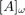

Preconditioning tests
Using the square root of the weighted Laplace operator
Let where , that is, for any twice differentiable function , . Note that for ,  is the usual Laplace-Beltrami operator on the segment. When is an infinite straight line, using a Fourier decomposition, one can show that the trace of the single-layer potential is the square-root of . In fact, for the open segment, a similar result holds. One can check that and commute, and that the Chebyshev polynomials are a common basis of eigenvectors for those two operators. To approximate the eigenvectors of an operator with respect to the scalar product
is the usual Laplace-Beltrami operator on the segment. When is an infinite straight line, using a Fourier decomposition, one can show that the trace of the single-layer potential is the square-root of . In fact, for the open segment, a similar result holds. One can check that and commute, and that the Chebyshev polynomials are a common basis of eigenvectors for those two operators. To approximate the eigenvectors of an operator with respect to the scalar product
we write that for any , the n-th eigenvector , associated to the eigenvalue satisfies
In the discrete setting, we find such that for all ,
That is, if we denote by  the Galerkine matrix of for the scalar product defined previously,
This is a generalized eigenvalue / eigen vectors problem. Here and are self adjoint positive, is positive definite. Therefore, the exact and approximate eigenvalues are necessarily real and positive.
Eigenvalues of the weighted Laplace operator
For , one has for all .
clear all close all clc; segment = unitSegment; N = 100; repartition = @cos; bounds = [-pi,0]; mesh = MeshCurve(segment,N,repartition,bounds); Vh = weightedFEspace(mesh,'P1','1/sqrt(1-t^2)',5); M = full(Vh.Mass); Wh = weightedFEspace(mesh,'P1','sqrt(1-t^2)',5); dM = full(Wh.dMass); [P1,D1] = eig(dM,M); [eigenVals_dM,I] = sort(diag(D1)); figure; loglog(1:Vh.ndof-1,sort(eigenVals_dM(2:end)),'*'); hold on loglog(1:Vh.ndof-1,(1:Vh.ndof-1).^2,'*') title('Non-negative eigenvalues of \Delta_{\omega}') xlabel('Eigenvalue number') legend({'Approximate','Exact'});
We can also check that the first eigenvectors are close to the Chebyshev polynomials. For , for example :
X = Vh.dofCoords; s = Vh.mesh.sVertices; n = 10; Tn = R2toRfunc.Tn(n); figure; plot(s,Tn(X)); hold on; plot(s,P1(:,I(n+1))/P1(end,I(n+1))) title('An eigenvector of \Delta_\omega') legend({'exact','approx'}); xlabel('curvilinear abscissa')
Eigenvalues of the weighted Laplace operator
For . One has

where if  , and .
, and .
Somega = singleLayer(0,Vh,[],{'full',true});
Sgalerk = Somega.galerkine(Vh,'U');
% The full option computes the matrix without SBD compression.
[P2,D2] = eig(full(Sgalerk),M);
[eigenVals_S,I] = sort(diag(D2),'descend');
eigenVals_S(1:2) = eigenVals_S(2:-1:1);
I(1:2) = I(2:-1:1);
figure;
loglog(0:Vh.ndof-1,eigenVals_S,'*');
hold on
s_n = 1./(2*(1:(Vh.ndof-1))); s_0 = log(2)/2;
s_n = [s_0, s_n];
loglog(0:Vh.ndof-1,s_n,'*')
title('Eigenvalues of S_{\omega}')
xlabel('Eigenvalue number')
legend({'Approximate','Exact'});
Application to preconditionning
Based on the values of the eigenvalues of the two operator, it follows that
where is the orthogonal family of projector defined by
Moreover, here the square root is taken in the following sense : for any operator of the form
We exploit this fact to build a preconditionner for . One method is to compute the squre root of the operator . This can be done exactly with the following code.
sqrtdM = M*P1*sqrt(D1)*P1^(-1); % sqrtdM is as M*sqrtm(M^(-1)*dM); T0_scal_phi = Vh.phi'*Vh.W; T0_star_galerk = T0_scal_phi*T0_scal_phi'/sum(Vh.W); Prec_galerk = M^(-1)*(2*sqrtdM + 1/s_0*T0_star_galerk)*M^(-1); figure plot(sort(eig(Prec_galerk*full(Sgalerk))),'+'); title('Eigenvalues of the preconditionned matrix')
However, if the number of unknowns gets large, it is not tractable to perform an eigenvalue/ eigenvector decomposition of the matrix dM. Instead, one can use a method to get a fast approximation of the matrix-vector product
N = 100; mesh = mesh.remesh(N); Wh = weightedFEspace(mesh,'P1','sqrt(1-t^2)',5); dM = Wh.dMass.concretePart; Vh = weightedFEspace(mesh,'P1','1/sqrt(1-t^2)',5); M = Vh.Mass.concretePart; a_factor = 15; % This has been balanced to get at the same time fast MV product % and not too long an assembling. A big a_factor is in favor of the $S_0$ % preconditioner since more local interactions are stored. Somega = singleLayer(0,Vh,[],{'a_factor',a_factor}); Sgalerk = Somega.galerkine(Vh,'U'); T0_scal_phi = Vh.phi'*Vh.W; T0_star_galerk = T0_scal_phi*T0_scal_phi'*(1/sum(Vh.W)); u0 = R2toRfunc(@(Z)(sin(5*Z(:,1)))); l = Somega.Vh.secondMember(u0); t0 = tic; disp('No preconditioner') [~,~,~,~,resvec0] = variationalSol(Sgalerk,l,20,1e-8,N); fprintf('\nGmres returned a solution in %s iteration\n',num2str(length(resvec0))); t0 = toc(t0); fprintf('t = %s s\n\n',num2str(t0)) t1 = tic; disp('preconditionned by SBD local matrix') Prec1 = Sgalerk.concretePart; [~,~,~,~,resvec1] = variationalSol(Sgalerk,l,20,1e-8,N,Prec1); fprintf('Gmres returned a solution in %s iteration\n',num2str(length(resvec1))); t1 = toc(t1); fprintf('t = %s s \n\n',num2str(t1)) disp('preconditionned by Square root of weighted Laplace operator, à la volée') t2 = tic; Prec2 = @(u)(M\TrefethenSqrt(4*dM,3,M\u,M,4,4.5*Vh.ndof^2)); [~,~,~,~,resvec2] = variationalSol(Sgalerk,l,[],1e-8,N,Prec2); fprintf('\nGmres returned a solution in %s iteration\n',num2str(length(resvec2))); t2 = toc(t2); fprintf('t = %s s \n\n',num2str(t2)) disp('preconditionned by Square root of weighted Laplace operator, fully assembled') t3 = tic; Minv = M^(-1); Prec3 = Minv*TrefethenSqrt(4*dM,3,[],M,4,4.5*Vh.ndof^2)*Minv; t3bis = tic; [~,~,~,~,resvec3] = variationalSol(Sgalerk,l,[],1e-8,N,@(u)(Prec3*u)); fprintf('\nGmres returned a solution in %s iteration\n',num2str(length(resvec3))); t3bis = toc(t3bis); t3 = toc(t3); fprintf('t = %s s assemble, %s krylov \n\n',num2str(t3),num2str(t3bis)) figure; semilogy(0:length(resvec0)-1,resvec0/norm(full(l))); hold on semilogy(0:length(resvec1)-1,resvec1/norm(Prec1\full(l))); hold on semilogy(0:length(resvec2)-1,resvec2/norm(Prec2(full(l)))); legend({['No precond : ' num2str(t0) 's'],... ['$S_0$ : ' num2str(t1) 's'],... ['$\sqrt{-\Delta_{\omega}}$ : ' num2str(t2) 's']},... 'interpreter','latex'); xlabel('Iteration count'); ylabel('relative residual'); title('Gmres history, comparing preconditionners')
********************************************* SBD package : launching the radial decomposition Warning: Condition number too high, restarting with a = 1.677051e-01 Bessel decomposition successfully computed. Number of terms : 35 Radial quadrature of 35 components computed in 0.057588 seconds Done NUFFT for local correction : * No preconditioner ******************************************* Gmres returned a solution in 41 iteration t = 0.76546 s preconditionned by SBD local matrix ************Gmres returned a solution in 11 iteration t = 0.30566 s preconditionned by Square root of weighted Laplace operator, à la volée ******* Gmres returned a solution in 6 iteration t = 0.19478 s preconditionned by Square root of weighted Laplace operator, fully assembled ******* Gmres returned a solution in 6 iteration t = 0.13292 s assemble, 0.12337 krylov
Alternative preconditionner
The relation between the eigenvalues of and also implies that
so that the matrix
should provide an efficient preconditioner for . We perform once again the comparison between those methods
Asymptotic behavior
We now run the previous test for several values of and show the evolution of iteration number, time and preconditioner assembling for the full square root method.
run('asymptoticPrecondSqrtSegment.m'); figure; plot(ns,nit0,'DisplayName','No Precond') hold on plot(ns,nit1,'DisplayName','S_0') plot(ns,nit2,'DisplayName','\surd{-\Delta_{\omega}}') plot(ns,nit4,'DisplayName','-S_{\omega}\Delta_{\omega}') legend show axis tight title('Number of gmres iterations vs Ndof'); ylabel('Nit') xlabel('Ndof') figure; loglog(ns,t0_save,'DisplayName','No Precond') hold on loglog(ns,t1_save,'DisplayName','S_0') loglog(ns,t2_save,'DisplayName','\surd{-\Delta_{\omega}}') loglog(ns,t3_save,'--','DisplayName','\surd{-\Delta_{\omega}} (assembling phase)') loglog(ns,t3bis_save,'DisplayName','\surd{-\Delta_{\omega}} (once assembled)') loglog(ns,t4_save,'DisplayName','S_{\omega}\Delta_{\omega}') grid on; legend show; set(legend,'location','eastoutside') axis tight title('time vs Ndof') xlabel('Ndof'); ylabel('t(s)');
Warning: Condition number too high, restarting with a = 2.371708e-01 Warning: Condition number too high, restarting with a = 1.677051e-01